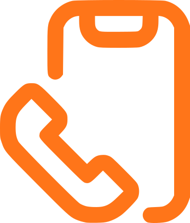
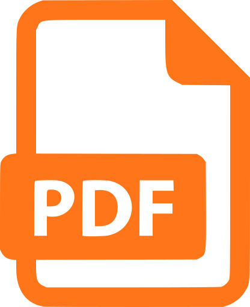

P
S
&
CO
La voix qui fait parler vos résultats
Vous avez un projet ? Discutons en !
-  06 20 41 50 44
- nicolas.schneider@hotmail.fr
-  Téléchargez mon cv
La voix qui fait parler vos résultats
Vous avez un projet ? Discutons en !
POS&CO est le fruit de plus d'une dizaine d'années d'expérience dans la vente. Fort d'un savoir faire unique forgé auprès d'entreprises prestigieuses, je mets mon expertise à votre disposition. Ensemble donnons de la voix au développement de votre activité.
C'est pour relever de nouveaux défis que j'ai fondé mon entreprise. Me fixer des objectifs et les dépasser me stimule, tant au niveau professionel que personnel. Je suis également d'une curiosité intarissable. Dans ma carrière j'ai vendu de nombreux produits : diagnostics immobiliers, appareils auditifs, logiciels informatiques, produits bancaires et bien d'autres. La richesse de ce panel me donne une capacité d'adaptation à tout contexte, qu'il s'agisse de la solution à commercialiser ou du client. J'ai hâte de découvrir avec vous quels nouveaux défis nous pourrons relever.
Titulaire d'une licence en psychologie, mes connaissances en sciences sociales et particulièrement en influence interindividuellle m'apportent un avantage décisif pour comprendre mes clients et optimiser mes performances commerciales. Mes techniques de persuasion ainsi que mon écoute proactive sont des leviers pour transformer chaque appel en opportunité.
Vous préférez consulter mes compétences dans un format conventionnel ? Téléchargez mon cv
Depuis plus de 30 ans, EDISER est le 1er fournisseur de contenu pédagogique à destination des auto-écoles en France. L'entreprise conçoit et revend des solutions destinées à l’apprentissage et la pratique du code de la route, allant des plaquettes utilisées par l'examen du permis de conduire aux simulateurs de conduite.
J'ai contribué au lancement d'un nouveau produit destiné aux auto-écoles: un service de comité d'entreprise. J'ai conçu et mis en œuvre une campagne de prospection téléphonique, tout en assurant la vente du service via des visioconférences, atteignant une moyenne de 50 ventes mensuelles pour un objectif fixé à 40. Parallèlement, j'avais pour mission de planifier des rendez-vous pour les commerciaux terrain, portant sur des simulateurs et autres solutions proposées par l'entreprise.
Expert des diagnostics immobiliers, Dimo élabore les dossiers techniques nécessaires à la vente ou à la location de biens immobiliers pour particuliers et professionnels. La société réalise également des audits dans le cadre de projets de rénovation énergétique.
En charge des ventes par appels entrants, j'ai atteint un record de 60 000 € de chiffre d'affaires mensuel, surpassant l'objectif fixé à 35 000 €. Mes responsabilités incluaient également la gestion des démarches administratives, le conseil personnalisé sur les travaux de rénovation, ainsi que la prise de rendez-vous pour des agents immobiliers indépendants.
Groupe automobile emblématique spécialisé dans les véhicules de luxe allemands. La marque s’appuie sur un réseau de concessions franchisées pour sa distribution et externalise son pôle marketing France auprès du Groupe COMDATA, un centre d’appel basé à Strasbourg
En charge de la téléprospection B2C, ma mission principale consistait à planifier des rendez-vous en concession en fournissant aux concessionnaires des leads qualifiés avec un projet d’achat dans un délai maximum de 6 mois. J’ai également participé à diverses campagnes B2B visant à promouvoir la marque, telles que l’organisation de salons de présentation dans des cadres prestigieux destinés aux dirigeants d’entreprises.
Centre audioprothésiste indépendant basé à Montpellier. Des commerciaux réalisent gratuitement des dépistages auditifs à domicile pour les particuliers. En cas de trouble auditif détecté, ils organisent un rendez-vous au cabinet dans le but d'équiper le patient avec l'appareil auditif adapté.
J'organisais par téléprospection les rendez-vous dans les agendas des commerciaux. Je planifiais également des actions commerciales sur des évènements ponctuels auxquels je participais, comme des bingos ou des séminaires du 3ème âge, afin de démarcher de nouveaux clients.
LEADEO, spécialiste de la détection et de la qualification de leads pour le marché des logiciels de gestion en entreprise, facilite la mise en relation entre les éditeurs de solutions IT et les entreprises ayant des besoins en software ou hardware.
Par téléphone je démarchais toute entreprise en France afin d'identifier et de qualifier leur prochain projet informatique. Mon rôle consistait à passer par le standard téléphonique pour atteindre les responsables des différents services et les convaincre de planifier un rendez-vous avec nos partenaires. Grâce à mon approche persuasive, j’atteignais une moyenne de 5 leads qualifiés par semaine sur un objectif fixé à 3.
Le Crédit Industriel et Commercial (CIC) est un réseau bancaire français combinant un vaste réseau de points de vente physiques et des centres d’appels dédiés à la gestion à distance des comptes bancaires.
En tant que téléconseiller, je contactais les clients du groupe pour leur proposer des produits bancaires tels que des livrets ou des assurances. J’organisais également des rendez-vous pour les banquiers sur des produits plus complexes, comme des assurances vie ou des comptes d’investissement en actions.